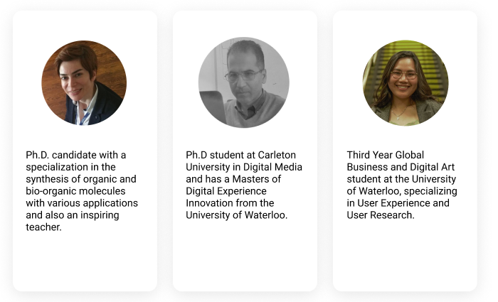
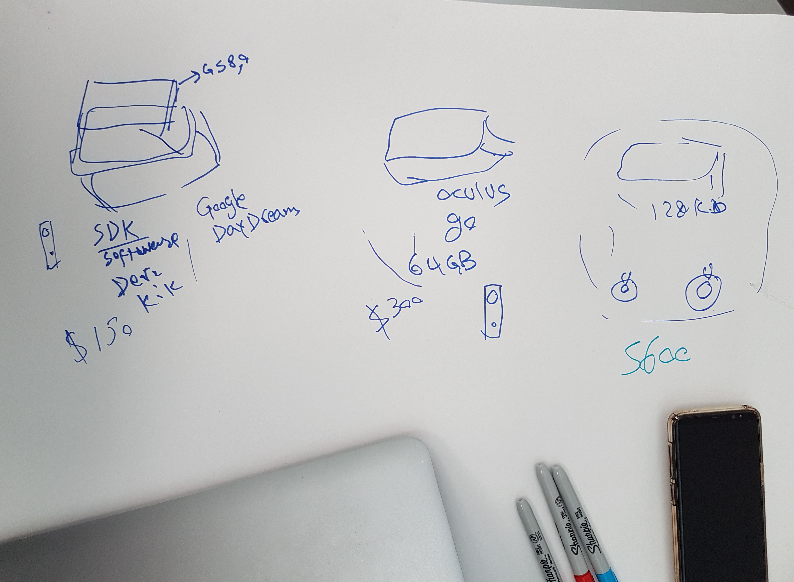
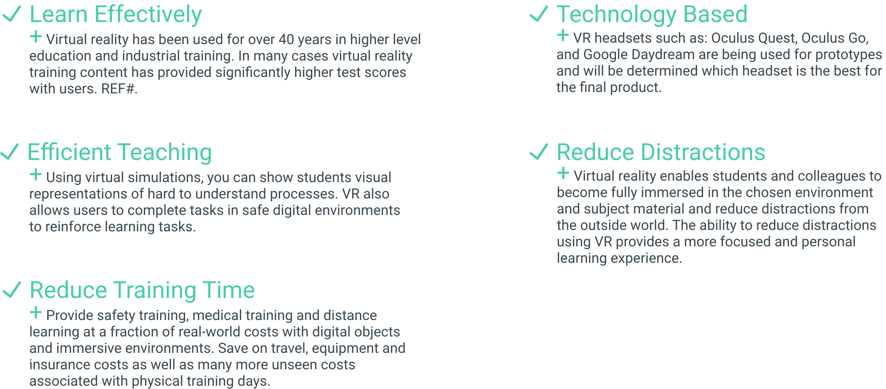
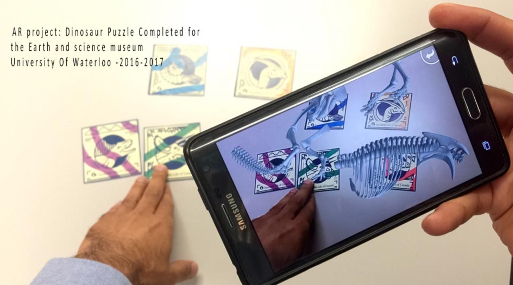
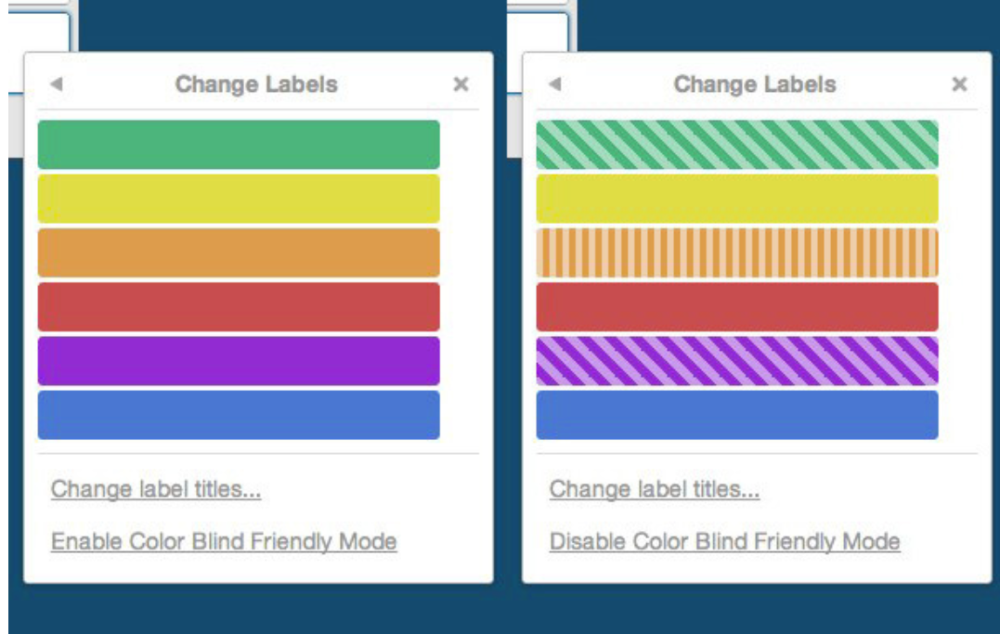
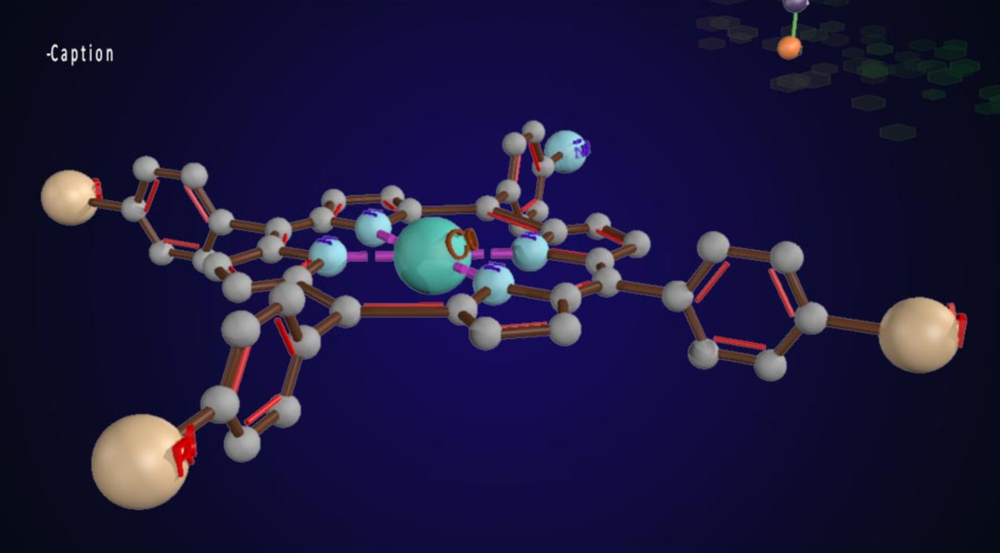

Company | Archemy
Position | UX Researcher
Duration | September 2018 - September 2020
Tools | Illustrator, InDesign, Figma, Microsoft Suite
Overview
ARCHEMY is a 3D augmented reality (AR) tool that will help students understand chemical interactions by using tactile AR markers to simulate molecular bonds in a 3D digital environment.
Who we are
We all thought VR was fun to play, but we also thought: how can we use VR as a form of learning in this innovative economy we live in? We are a team of designers, researchers, professors and learners. We are advocate for education and students’ ease of learning especially.
Our current work
We use AR/VR and Virtual Reality headsets such as: Google Cardboard & Daydream and Oculus Go & Quest, to teach concepts, theories and conduct mock experiments in STEM-related courses to ease the learning of students in one of the many challenging courses taken in post-secondary.
Goals
Current research
Determining the market of who would use our product or who our product would benefit, specifically learning the lessons the concepts (students and professors for Post-secondary schools).
User packages
I initiated the Post and Pre-user testing questions to determine how we will be approaching the user-testing phase. The Pre-user questions would help determine their year, program, school, type of courese they are taking (in STEM), their learning styles and what VR or AR experience they have. The Post-testing questions will be useful for when we are ready to test the A/B protytpe of our product and for after our users have tested out product; this would help us determining what VR headset, with the accompanying remotes, is most ideal.
I interviewed my fellow classmates and friends, who were or is currently enrolled in STEM courses or program to understand their experience with the course materials, how comfortable they were with the lessons beings taught, how engaged or interested were they in the course and how it reflected in their deliverables. Understanding the learning styles of majority of STEM students would help us better design our VR lessons to the users. Majority of students are visual and kinesthetic learners meaning images, tangible objects and carrying out physical activities is more effective than listening to lectures.
Sense of sight
We wanted this product to be user-centric and focused on all learning types. Our biggest challenge that we are currently attempting to alleviate is creating a meaningful learning experience for students with accessibility issues. I researched the AODA and read about their accessibility standards to apply to the product. I wanted to first start with the most common accessibility matter to hopefully improve within our product which is regarding sight. As a student, learner and ordinary person, our sense of sight it the most used, however, there are many cases where individuals have sight impediments that stops them from having the full experience of the product. As our learning experience being the most important aspect within our product we want to make sure our concepts and lessons are clear and easy to see and visualize in a VR space.
Patterns and colours
Approaching this pain point, I decided to look into ways of how to make the sense of sight less of a challenge or pain point and more of a fun additional asset! Trello boards were my inspiration. Trello, a list-making application, that contains boards, lists, and cards to organize and prioritize your projects in a fun, flexible, and rewarding way. One of the greatest features of Trello is their colored & patterned tags to help further organize one's action or task card. We always associate colors with organization but not everyone can use colors to their advantage due to color blindess and other forms of sight impairement that hinders their seeing of colors. Using shapes and patterns are the next most useful method in organization; everyone can see and determine shapes and outlines that even without colors, the shapes and outlines are still clear in sight.
Ball and stick activity
In chemistry, the ball-and-stick model is a molecular model of a chemical substance which is to display both the three-dimensional position of the atoms and the bonds between them. The atoms are typically represented by spheres, connected by rods which represent the bonds. I wanted to incorperate this method into this activity to help individuals determine which molecular model is needed to create a chemical bond outlined in their lesson or assignments. Such atoms are determined by color as seen in text-books and in physical models, they also vary in size but that still does not help with differentiating each atom. I decided to incorperate Trello's color & pattern method into our atom or molecule legend in the VR space; this is so that when users are completing the activity, they can refer to the legend and easily determine which chemical atom is needed to create a particular bond.
Current research
We created possible solutions for individuals who have impaired sight as it is the most common accessibility challenge: many have colorblindness and such subjects often use colors to differentiate and label specific parts and materials. This is done by using patterns to also label materials, in this case, specific chemical atoms such as Hydrogen, Oxygen etc. Not only are these atoms colored appropriately but they also have specific patterns on the atoms to characterize its chemical.
Next steps
This is an on-going project that my colleagues and I will continue to improve to finally share with everyone.
We believe the Virtual Reality industry can pioneer a new and effective way of learning: more engaging, interactive,
enjoyable and meaningful. We hope our product could be of help to students and professors beyond our local universities,
in the STEM programs with challenging courses such as Organic Chemistry and hopefully help individuals beyond STEM programs.
We are continuing the user research, transitioning from phase A (rendering the VR space) to B (creating learning activites
and scenarios in the VR space; more user-testing is on its way along with Archemy's future launch.
Check out the current progress of this project!